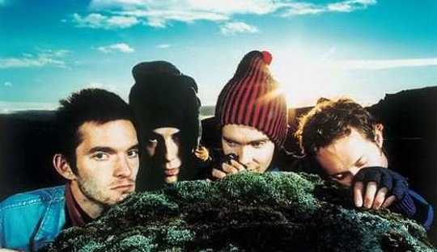

 (冰岛,大家都惊讶于这样一个岛国，面积仅10.3万平方公里，且大部分地区不能住人，人口仅30万，却有超过90多所音乐学校，1000多支乐队) SIGUR ROS应该是迄今为止我最喜欢的乐队了。 在我考研的时候买的SIGUR ROS的首张专辑，盗版。当时的确对黑色封面上的一个胚胎婴儿里面藏着怎么样的音乐一无所知。但买了以后他毫无疑问地成为我那段时间的唯一，在床头的CD机里几乎没有取出来过。晚上熄灯后，他伴我入睡，早晨6点早起床，习惯赖在床上一会，于是按一下没关的CD机的播放键。 SIGUR ROS在采访中说道：”we went into the studio with this one song and we found out that we were all on the same wavelength, we liked the same kind of music, so we decided to form.” on the same wavelength 我很欣赏这个说法，所谓的共鸣就是如此吧。每个人都有属于自己的一个频率，这可以用来解释有些音乐打动别人却不打动你。这个频率和你一路过来的经历，你的内心成长，你的性格相关。我自认我绝不是朋克那类的范儿。哪怕我喜欢战车乐队，我也清楚，我并不是和他们on the same wavelength。直到SIGUR ROS的出现，我才犹如站到了一面镜子面前。 正如有些想法，有些话，你自己在心里酝酿了很多次，可不知道如何表达。这时候如果你听到另外一个人帮你说出了那句话，一种相识恨晚的知音的感觉便会涌进你的心里。对我来说，SIGUR ROS的音乐所带有的情感和气质，正是我多年来一直向往的啊。他们又像一个对我非常了解的老朋友，让我在他们面前无所遁形，段段旋律都直入我内心，让我毫无免疫力，听一次，难看一次…… SIGUR ROS等许多冰岛乐队的音乐里，充分展示了冰岛的气息，这是一个安详的地方。这些音乐里所带有的气质不是我们这些朝九晚六的上班族所能创造的，不是这个匆忙烦躁的社会所能有的。我自问自己的物质欲望不高，我想如果能象网上网友拍的那首OLSEN OLSEN的视频那样，躺在那片安静的草地上，听着SIGUR ROS的现场，看着蓝色的天空，最幸福的感觉也莫过如此。而眼前的所谓幸福，也许只是房价下降？我们每天匆匆忙忙，把自己融入这个商业社会。只有当我们把平日司空见惯习以为常的东西推到一个距离以外，我们才能发现最本质的快乐来自于哪里。 除了冰岛的气质，在SIGUR ROS大多催人泪下的音乐里，我常常感觉到一种美好，只是这种美好对我们而言往往是已经丢失了，久违了的。hoppipolla这首歌的MV，是对我这种感受最好的总结。每次看这个MV，我都象看到了自己小时候，我都想起自己小的时候，快乐是如此的简单，哪怕没有电脑游戏，哪怕只是在家门前的小水沟里。而又发现自己，已经只能回忆了。 对于这内心幸福丢失的遗憾，或追忆，现已转变成了我要在有生之年去一趟冰岛的愿望。我相信当我登上那一块岛屿，会发现内心深处珍藏的一切都在那等着我。